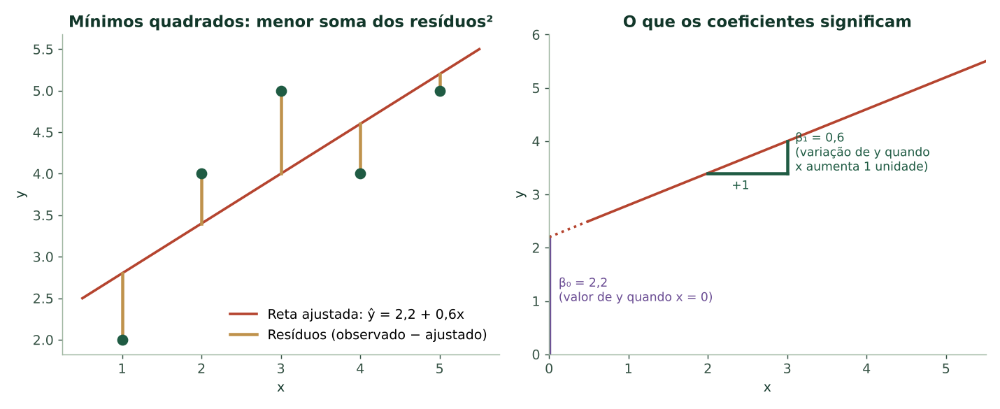
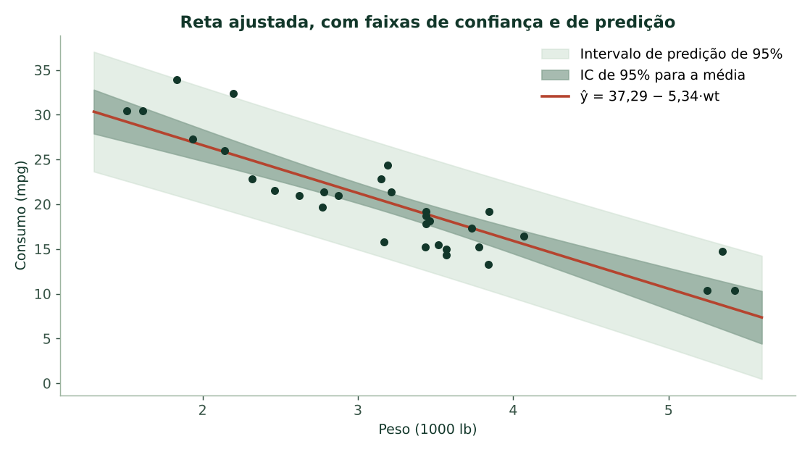
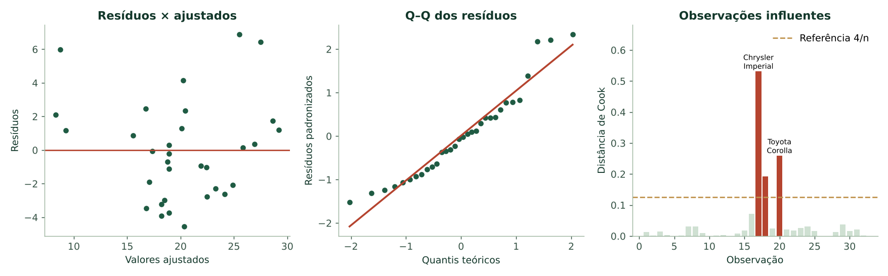

Regressão linear simples
Descreve e prevê uma resposta quantitativa a partir de uma única variável explicativa, por meio de uma reta.
Comece por aqui
A correlação diz que duas variáveis caminham juntas. A regressão linear simples vai além e responde a duas perguntas práticas: quanto a resposta muda, em média, quando a variável explicativa aumenta uma unidade, e qual valor esperar da resposta para um dado valor da explicativa. Tudo isso com uma reta.
O termo “regressão” vem de Francis Galton (1886), que observou que filhos de pais muito altos tendiam a ser altos, porém menos que os pais: as alturas “regrediam” em direção à média. O método dos mínimos quadrados é mais antigo, publicado por Legendre em 1805 e reivindicado por Gauss.
O que é o modelo
A resposta \(y\) é descrita como uma reta em função de \(x\) mais um erro aleatório. Os parâmetros são estimados por mínimos quadrados: entre todas as retas possíveis, escolhe-se a que torna mínima a soma dos quadrados dos resíduos, isto é, das distâncias verticais entre os pontos e a reta.

Pressupostos e como verificá-los
| Pressuposto | Por que importa | Como verificar |
|---|---|---|
| Linearidade | A média de y é função linear dos preditores; caso contrário, as estimativas são enviesadas. | Resíduos × valores ajustados: os pontos devem ficar em torno de zero, sem curva. |
| Independência dos erros | Erros dependentes distorcem erros-padrão e valores-p. | Delineamento; em dados ordenados no tempo, gráfico dos resíduos na ordem de coleta e teste de Durbin–Watson (lmtest::dwtest). |
| Normalidade dos erros | Garante testes t e F e intervalos exatos em amostras pequenas. | Q–Q dos resíduos e Shapiro–Wilk aplicado aos resíduos. |
| Homocedasticidade (variância constante) | Variância desigual invalida os erros-padrão. | Resíduos × ajustados sem formato de funil; teste de Breusch–Pagan (lmtest::bptest). |
| Ausência de observações influentes | Poucos pontos podem determinar a reta. | Distância de Cook e alavancagem (cooks.distance, hatvalues). |
Normalidade e variância constante referem-se aos erros do modelo, avaliados pelos resíduos. Não é necessário que x ou y tenham distribuição normal.
Hipóteses e estatística de teste
Em que:
- \(\beta_0,\ \beta_1\)
- intercepto e inclinação populacionais (parâmetros)
- \(b_0,\ b_1\)
- estimativas de mínimos quadrados
- \(\hat y_i\)
- valor ajustado: \(b_0+b_1x_i\)
- \(y_i-\hat y_i\)
- resíduo da observação i
- \(s\)
- erro-padrão residual: desvio típico dos pontos em torno da reta, na unidade de y
- \(S_{xx},\ S_{xy}\)
- soma de quadrados de x e soma de produtos cruzados
- \(EP(b_1)\)
- erro-padrão da inclinação
- \(R^2\)
- coeficiente de determinação: fração da variabilidade de y explicada pela reta
- \(n\)
- número de observações
Exemplo numérico, passo a passo (n = 5)
Pares (x; y): (1; 2), (2; 4), (3; 5), (4; 4), (5; 5), com \(\bar x=3\), \(\bar y=4\), \(S_{xy}=6\), \(S_{xx}=10\) e \(SQ_{total}=6\).
| x | y | Ajustado (2,2 + 0,6x) | Resíduo | Resíduo² |
|---|---|---|---|---|
| 1 | 2 | 2,8 | −0,8 | 0,64 |
| 2 | 4 | 3,4 | 0,6 | 0,36 |
| 3 | 5 | 4,0 | 1,0 | 1,00 |
| 4 | 4 | 4,6 | −0,6 | 0,36 |
| 5 | 5 | 5,2 | −0,2 | 0,04 |
| Soma | 0 | 2,40 |
\(b_1=6/10=0{,}6\) e \(b_0=4-0{,}6\times3=2{,}2\).
\(s^2=2{,}40/3=0{,}80\) ⇒ \(s=0{,}894\); \(EP(b_1)=0{,}894/\sqrt{10}=0{,}283\).
\(t=0{,}6/0{,}283=2{,}121\), com 3 g.l. ⇒ \(p=0{,}124\).
\(R^2=1-2{,}40/6=0{,}60\). IC de 95% para \(\beta_1\): \(0{,}6\pm3{,}182\times0{,}283=[-0{,}30;\ 1{,}50]\).
Intervalos: coeficientes, média e nova observação
Propriedades
- A reta passa sempre pelo ponto \((\bar x,\bar y)\) e a soma dos resíduos é zero.
- Com um único preditor, \(R^2=r^2\) (o quadrado da correlação de Pearson) e o teste t de \(\beta_1\) equivale ao teste de \(\rho=0\) e ao teste F da regressão (\(F=t^2\)).
- O intervalo de predição é sempre mais largo que o intervalo de confiança para a média, porque inclui a variabilidade de uma observação individual.
- Os dois intervalos se alargam à medida que \(x_0\) se afasta de \(\bar x\): prever longe do centro dos dados é menos preciso.
- Pelo teorema de Gauss–Markov, os estimadores de mínimos quadrados têm a menor variância entre os estimadores lineares não viesados, mesmo sem normalidade.
Como interpretar os resultados
| Elemento | O que informa | Cuidado |
|---|---|---|
| Inclinação b₁ | Variação média de y por unidade de x. | Depende das unidades de medida; não indica causa. |
| Intercepto b₀ | Valor previsto para x = 0. | Só tem sentido se x = 0 estiver na faixa observada. |
| IC de b₁ | Faixa de valores plausíveis para o efeito. | Mais informativo que o valor-p. |
| Valor-p de b₁ | Evidência contra β₁ = 0. | Não mede a importância prática. |
| R² | Fração da variabilidade explicada. | R² alto não garante modelo adequado; R² baixo não o invalida. |
| Erro-padrão residual s | Erro típico de previsão, na unidade de y. | Compare com a escala da resposta. |
Reporte a equação ajustada, os intervalos de confiança dos coeficientes, R², s, n e uma avaliação dos resíduos.
Como executar no R e em Python
Onde executar o código em Python
Não é preciso instalar nada: o Google Colab é um computador na nuvem, gratuito, que executa Python pelo navegador e já traz as bibliotecas usadas aqui (numpy, scipy e matplotlib).
lm() ajusta o modelo; summary(), confint(), anova(), predict() e plot() exploram o resultado. Todas pertencem ao pacote stats, já instalado com o R. O teste de Breusch–Pagan está no pacote lmtest (install.packages("lmtest")).
modelo <- lm(mpg ~ wt, data = mtcars)
summary(modelo)
confint(modelo)
O código Python desta ficha faz as contas passo a passo com numpy, para que cada resultado possa ser acompanhado. No dia a dia, a biblioteca statsmodels, também disponível no Google Colab, oferece o ajuste e a tabela de resultados prontos.
Exemplo de aplicação
Contexto dos dados
Com os 32 automóveis do mtcars, queremos descrever como o consumo (mpg, milhas por galão) varia com o peso (wt, em milhares de libras) e prever o consumo de um carro de 3000 libras.
Código em R
# Regressão linear simples: exemplo completo ----
# Pacote: apenas o stats (já vem com o R). Dados: mtcars.
# 1. Gráfico de dispersão
plot(mpg ~ wt, data = mtcars, pch = 19, xlab = "Peso (1000 lb)", ylab = "Consumo (mpg)")
# 2. Ajuste do modelo mpg = b0 + b1 * wt
modelo <- lm(mpg ~ wt, data = mtcars)
summary(modelo)
confint(modelo) # intervalos de confiança de 95% dos coeficientes
anova(modelo) # tabela de análise de variância
abline(modelo, col = "red", lwd = 2)
# 3. Previsão para um carro de 3000 libras (wt = 3)
novo <- data.frame(wt = 3)
predict(modelo, novo, interval = "confidence") # IC para a média
predict(modelo, novo, interval = "prediction") # intervalo de predição
# 4. Diagnóstico dos resíduos
shapiro.test(residuals(modelo))
head(sort(cooks.distance(modelo), decreasing = TRUE), 3)
par(mfrow = c(2, 2)); plot(modelo); par(mfrow = c(1, 1))
# 5. Teste de Breusch-Pagan (pacote lmtest): install.packages("lmtest")
# lmtest::bptest(modelo)
# 6. Faixas de confiança e de predição
grade <- data.frame(wt = seq(1.5, 5.5, length.out = 100))
ic <- predict(modelo, grade, interval = "confidence")
ip <- predict(modelo, grade, interval = "prediction")
plot(mpg ~ wt, data = mtcars, pch = 19, xlab = "Peso (1000 lb)", ylab = "Consumo (mpg)")
matlines(grade$wt, cbind(ic, ip[, -1]), lty = c(1, 2, 2, 3, 3), col = c("red", "gray40", "gray40", "gray60", "gray60"))
A mesma análise em Python, com os resultados
Cole o código em um notebook do Google Colab ↗ e execute com Shift+Enter. Os valores abaixo são a saída desse código.
# Bibliotecas: numpy, scipy e matplotlib (já instaladas no Google Colab)
import numpy as np
from scipy import stats
import matplotlib.pyplot as plt
def mqo(X, y, nomes):
"""Mínimos quadrados ordinários: X sem a coluna de 1 (o intercepto é acrescentado aqui)."""
X = np.column_stack([np.ones(len(y)), X]); n, p = X.shape
XtX_inv = np.linalg.inv(X.T @ X)
beta = XtX_inv @ X.T @ y
ajustado = X @ beta; res = y - ajustado
sqe = res @ res; sqt = np.sum((y - y.mean())**2)
s2 = sqe / (n - p); ep = np.sqrt(s2 * np.diag(XtX_inv))
t = beta / ep; pv = 2 * stats.t.sf(np.abs(t), n - p); tc = stats.t.ppf(0.975, n - p)
print(f"{'Termo':<12}{'Estimativa':>11}{'Erro-padrão':>13}{'t':>9}{'p-valor':>11}{'IC 95%':>22}")
for nm, b, e, ti, pi in zip(["(Intercepto)"] + nomes, beta, ep, t, pv):
print(f"{nm:<12}{b:>11.4f}{e:>13.4f}{ti:>9.3f}{pi:>11.2e} [{b - tc*e:>8.4f}; {b + tc*e:>8.4f}]")
r2 = 1 - sqe / sqt; r2a = 1 - (1 - r2) * (n - 1) / (n - p)
F = ((sqt - sqe) / (p - 1)) / s2
print(f"Erro-padrão residual = {np.sqrt(s2):.4f} com {n - p} gl | R² = {r2:.4f} | R² ajustado = {r2a:.4f}")
print(f"F({p - 1}, {n - p}) = {F:.2f}, p-valor = {stats.f.sf(F, p - 1, n - p):.2e}")
return dict(X=X, beta=beta, ep=ep, res=res, ajustado=ajustado, s2=s2, XtX_inv=XtX_inv, sqe=sqe, sqt=sqt, r2=r2, n=n, p=p)
# Dados do conjunto mtcars: peso (wt, em 1000 libras) e consumo (mpg)
wt = np.array([2.62, 2.875, 2.32, 3.215, 3.44, 3.46, 3.57, 3.19, 3.15, 3.44, 3.44, 4.07, 3.73, 3.78, 5.25, 5.424, 5.345, 2.2, 1.615, 1.835, 2.465, 3.52, 3.435, 3.84, 3.845, 1.935, 2.14, 1.513, 3.17, 2.77, 3.57, 2.78])
mpg = np.array([21, 21, 22.8, 21.4, 18.7, 18.1, 14.3, 24.4, 22.8, 19.2, 17.8, 16.4, 17.3, 15.2, 10.4, 10.4, 14.7, 32.4, 30.4, 33.9, 21.5, 15.5, 15.2, 13.3, 19.2, 27.3, 26, 30.4, 15.8, 19.7, 15, 21.4])
n = len(mpg)
# 1. Ajuste do modelo mpg = b0 + b1 * wt
m = mqo(wt, mpg, ["wt"])
b0, b1 = m["beta"]
# 2. Tabela de análise de variância
sqr = m["sqt"] - m["sqe"]
print(f"\nSQ regressão = {sqr:.2f} (1 gl) | SQ resíduos = {m['sqe']:.2f} ({n - 2} gl) | SQ total = {m['sqt']:.2f} ({n - 1} gl)")
# 3. Previsão para um carro de 3000 libras (wt = 3)
x0 = 3.0; y0 = b0 + b1 * x0
sxx = np.sum((wt - wt.mean())**2); s = np.sqrt(m["s2"]); tc = stats.t.ppf(0.975, n - 2)
ep_media = s * np.sqrt(1/n + (x0 - wt.mean())**2 / sxx)
ep_novo = s * np.sqrt(1 + 1/n + (x0 - wt.mean())**2 / sxx)
print(f"\nPrevisão em wt = 3: {y0:.3f} mpg")
print(f"IC 95% para a média: [{y0 - tc*ep_media:.3f}; {y0 + tc*ep_media:.3f}]")
print(f"Intervalo de predição de 95%: [{y0 - tc*ep_novo:.3f}; {y0 + tc*ep_novo:.3f}]")
# Diagnóstico dos resíduos ----
h = np.sum((m["X"] @ m["XtX_inv"]) * m["X"], axis=1) # alavancagem (leverage)
r_pad = m["res"] / np.sqrt(m["s2"] * (1 - h)) # resíduos padronizados
cook = r_pad**2 * h / ((1 - h) * m["p"]) # distância de Cook
W, pw = stats.shapiro(m["res"])
print(f"\nShapiro-Wilk dos resíduos: W = {W:.4f}, p-valor = {pw:.4f}")
aux = np.linalg.lstsq(m["X"], m["res"]**2, rcond=None)[0] # Breusch-Pagan (versão de Koenker)
e2 = m["res"]**2; r2_aux = 1 - np.sum((e2 - m["X"] @ aux)**2) / np.sum((e2 - e2.mean())**2)
bp = m["n"] * r2_aux
print(f"Breusch-Pagan: BP = {bp:.4f}, gl = {m['p'] - 1}, p-valor = {stats.chi2.sf(bp, m['p'] - 1):.4f}")
maiores = np.argsort(-cook)[:3]
print("Maiores distâncias de Cook (observação: valor):", ", ".join(f"{i + 1}: {cook[i]:.3f}" for i in maiores))
print("Maiores resíduos padronizados (observação: valor):", ", ".join(f"{i + 1}: {r_pad[i]:.2f}" for i in np.argsort(-np.abs(r_pad))[:3]))
# 4. Exemplo do texto (n = 5)
print("\nExemplo com n = 5:")
m5 = mqo(np.array([1, 2, 3, 4, 5.]), np.array([2, 4, 5, 4, 5.]), ["x"])
# 5. Gráficos: reta ajustada e resíduos
fig, ax = plt.subplots(1, 2, figsize=(10, 4))
ax[0].scatter(wt, mpg); xs = np.linspace(wt.min(), wt.max(), 50); ax[0].plot(xs, b0 + b1 * xs, color="red")
ax[0].set_xlabel("Peso (1000 lb)"); ax[0].set_ylabel("Consumo (mpg)")
ax[1].scatter(m["ajustado"], m["res"]); ax[1].axhline(0, color="red")
ax[1].set_xlabel("Valores ajustados"); ax[1].set_ylabel("Resíduos")
plt.show()
Resultados da execução
Termo Estimativa Erro-padrão t p-valor IC 95% (Intercepto) 37.2851 1.8776 19.858 8.24e-19 [ 33.4505; 41.1198] wt -5.3445 0.5591 -9.559 1.29e-10 [ -6.4863; -4.2026] Erro-padrão residual = 3.0459 com 30 gl | R² = 0.7528 | R² ajustado = 0.7446 F(1, 30) = 91.38, p-valor = 1.29e-10 SQ regressão = 847.73 (1 gl) | SQ resíduos = 278.32 (30 gl) | SQ total = 1126.05 (31 gl) Previsão em wt = 3: 21.252 mpg IC 95% para a média: [20.124; 22.379] Intervalo de predição de 95%: [14.930; 27.574] Shapiro-Wilk dos resíduos: W = 0.9451, p-valor = 0.1044 Breusch-Pagan: BP = 0.0404, gl = 1, p-valor = 0.8406 Maiores distâncias de Cook (observação: valor): 17: 0.532, 20: 0.260, 18: 0.193 Maiores resíduos padronizados (observação: valor): 18: 2.33, 20: 2.22, 17: 2.17 Exemplo com n = 5: Termo Estimativa Erro-padrão t p-valor IC 95% (Intercepto) 2.2000 0.9381 2.345 1.01e-01 [ -0.7854; 5.1854] x 0.6000 0.2828 2.121 1.24e-01 [ -0.3001; 1.5001] Erro-padrão residual = 0.8944 com 3 gl | R² = 0.6000 | R² ajustado = 0.4667 F(1, 3) = 4.50, p-valor = 1.24e-01


| Elemento | Valor | Leitura |
|---|---|---|
| Equação ajustada | mpg = 37,285 − 5,344 × wt | |
| Inclinação (IC 95%) | −5,344 [−6,486; −4,203] | Cada 1000 libras a mais reduzem o consumo previsto em cerca de 5,3 mpg. |
| Teste de β₁ | t = −9,559; p = 1,3 × 10⁻¹⁰ | Evidência forte de associação linear. |
| R² | 0,753 | O peso explica 75% da variabilidade do consumo. |
| Erro-padrão residual | 3,046 mpg (30 g.l.) | Erro típico de previsão. |
| Previsão para wt = 3 | 21,25 mpg | IC da média: [20,12; 22,38]; predição: [14,93; 27,57]. |
| Shapiro–Wilk dos resíduos | W = 0,945; p = 0,104 | Sem evidência contra a normalidade. |
| Breusch–Pagan | BP = 0,040; p = 0,841 | Sem evidência de variância desigual. |
| Maior distância de Cook | 0,532 (Chrysler Imperial) | Carro pesado com consumo melhor que o previsto. |
Leitura: o modelo descreve bem a tendência geral e os testes de normalidade e de homocedasticidade não apontam problemas. O ponto de atenção é a leve curvatura nos resíduos: carros muito leves e muito pesados ficam acima da reta. Isso sugere que a relação não é exatamente linear, e alternativas como incluir outro preditor (regressão múltipla) ou um termo quadrático (regressão polinomial) merecem ser testadas. O intercepto (37,3) é o consumo previsto para um carro de peso zero: serve para posicionar a reta, não para ser interpretado.
Erros comuns
| Erro | Como evitar |
|---|---|
| Interpretar a inclinação como efeito causal | Em dados observacionais, outras variáveis podem explicar a relação. |
| Extrapolar além da faixa de x observada | A reta só é sustentada pelos dados onde há dados. |
| Avaliar o modelo apenas pelo R² | Examine os resíduos; modelos inadequados podem ter R² alto. |
| Testar a normalidade de y em vez da dos resíduos | O pressuposto é sobre os erros. |
| Confundir IC da média com intervalo de predição | Para um caso individual, use o intervalo de predição. |
| Remover pontos influentes sem justificativa | Investigue-os e reporte a análise com e sem eles. |
| Interpretar o intercepto quando x = 0 não faz sentido | Centralize x na média se quiser um intercepto interpretável. |
Alternativas e fluxo de trabalho
| Procedimento | Quando preferir |
|---|---|
| Regressão linear múltipla | Há outros preditores relevantes ou variáveis de confusão. |
| Regressão polinomial / splines | A relação é curva. |
| Transformação de variáveis (log) | Relação multiplicativa ou variância que cresce com a média. |
| Mínimos quadrados ponderados | Variância não constante com estrutura conhecida. |
| Regressão quantílica | Interesse na mediana ou em outros quantis; valores extremos. |
| Modelos lineares generalizados | Resposta binária, de contagem ou assimétrica. |
- Faça o diagrama de dispersão.
- Ajuste o modelo e leia coeficientes e intervalos.
- Examine os resíduos (linearidade, variância, normalidade, influência).
- Se houver violação, reformule o modelo.
- Só então use o modelo para explicar ou prever.
Referências desta ficha
- GALTON, Francis. Regression towards mediocrity in hereditary stature. The Journal of the Anthropological Institute of Great Britain and Ireland, v. 15, p. 246-263, 1886.
- MONTGOMERY, Douglas C.; PECK, Elizabeth A.; VINING, G. Geoffrey. Introduction to linear regression analysis. 6. ed. Hoboken: Wiley, 2021.
- FOX, John; WEISBERG, Sanford. An R companion to applied regression. 3. ed. Thousand Oaks: SAGE, 2019. (Pacote
car: https://CRAN.R-project.org/package=car.) - JAMES, Gareth; WITTEN, Daniela; HASTIE, Trevor; TIBSHIRANI, Robert. An introduction to statistical learning: with applications in R. 2. ed. New York: Springer, 2021.
- BREUSCH, Trevor S.; PAGAN, Adrian R. A simple test for heteroscedasticity and random coefficient variation. Econometrica, v. 47, n. 5, p. 1287-1294, 1979.
- KOENKER, Roger. A note on studentizing a test for heteroscedasticity. Journal of Econometrics, v. 17, n. 1, p. 107-112, 1981.
- COOK, R. Dennis. Detection of influential observation in linear regression. Technometrics, v. 19, n. 1, p. 15-18, 1977.
- ZEILEIS, Achim; HOTHORN, Torsten. Diagnostic checking in regression relationships. R News, v. 2, n. 3, p. 7-10, 2002. (Pacote
lmtest.) - HENDERSON, Harold V.; VELLEMAN, Paul F. Building multiple regression models interactively. Biometrics, v. 37, n. 2, p. 391-411, 1981. (Conjunto de dados
mtcars, pacotedatasetsdo R.) - R CORE TEAM. R: a language and environment for statistical computing. Vienna: R Foundation for Statistical Computing, 2026. Disponível em: https://www.r-project.org/. (Funções
lm,summary.lm,confintepredict.lm, pacotestats.) - POSIT TEAM. RStudio: integrated development environment for R. Boston: Posit Software, PBC. Disponível em: https://posit.co/download/rstudio-desktop/.
- VIRTANEN, Pauli et al. SciPy 1.0: fundamental algorithms for scientific computing in Python. Nature Methods, v. 17, p. 261-272, 2020. DOI: 10.1038/s41592-019-0686-2. (Funções do módulo
scipy.stats.) - HARRIS, Charles R. et al. Array programming with NumPy. Nature, v. 585, p. 357-362, 2020. DOI: 10.1038/s41586-020-2649-2.
- HUNTER, John D. Matplotlib: a 2D graphics environment. Computing in Science & Engineering, v. 9, n. 3, p. 90-95, 2007.
- GOOGLE. Google Colaboratory. Disponível em: https://colab.research.google.com/.
- As figuras desta ficha foram elaboradas pelo autor.

Prof. Dr. Cássius Henrique Xavier Oliveira
Professor · ICTIN/UFLA · Estatística, Confiabilidade e Ciência de Dados.
Conheça minha trajetória e projetos →